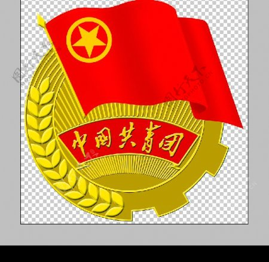

我的青春，我的团——我与共青团的故事
2022年，是中国共产主义青年团成立100周年。 |
 |
| 回望百年，青春向党。每一次搏击风浪的天空下，都激荡着青春的旋律；每一个勇毅前行的足迹中，都饱含着奋斗的艰辛。 |
| 时光不老，青春正好。穿越世纪风云，踏上百年征程。新时代的青年，青春正当时，奋斗正当时，更应踔厉奋发、笃行不怠，在新时代新征程中留下青春奋斗的鲜明印记。 |
| 为庆祝建团百年，激昂青春奋斗，本公众号特开设“庆祝建团百年·100个团史故事”栏目，让我们一起走进百年团史，追寻信仰之光，勇担青春使命。 |
中国新民主主义青年团 |
抗日战争胜利后，由于中国社会矛盾和革命形势及任务的变化,1946年9月以后，中共中央首先在陕甘宁边区开展了“择地试建”青年团的工作。在这项工作取得成功后，又于1946年11月5日向全国各解放区发出《关于建立民主青年团的提议》 |
.jpg) |
新中国成立后，中国新民主主义青年团迅速发展成为一个全国性的先进青年的群众组织，在完成由新民主主义向社会主义过渡任务中发挥了重要的作用。随着过渡时期任务的逐步完成，在1955年9月16日至18日召开的青年团二届三中全会上，通过了《关于召开青年团第三次全国代表大会和建议更改中国新民主主义青年团名称为中国共产主义青年团的决议》。决议指出：“鉴于我们国家的新民主主义革命时期已经终结，全国人民在党的领导下已进入了伟大的社会主义革命的新时期，党和国家所制定的社会主义建设和社会主义改造的总任务，已经给青年团提出了新的任务和新的要求，因而中国新民主主义青年团这一名称巳不能确切地体现青年团组织的性质和任务。广大团员和青年由于社会主义觉悟的不断提高，也十分希望更改团的名称。为此，青年团第二届中央委员会第三次全体会议建议在第三次全国代表大会上将“中国新民主主义青年团”改为“中国共产主义青年团”；并责成常委会组织专门委员会负责修改团章的工作。”团中央的这个建议很快得到了中共中央的批准。在1956年9月召开的中共八大通过的《中国共产党章程》上，关于党团关系一章就直接使用了“中国共产主义青年团”这个名称。1957年5月，中国新民主主义青年团第三次全国代表大会在北京召开，全体代表一致通过决议：将中国新民主主义青年团改名为中国共产主义青年团。此后，中国共产主义青年团这个名称一直沿用至今。 |